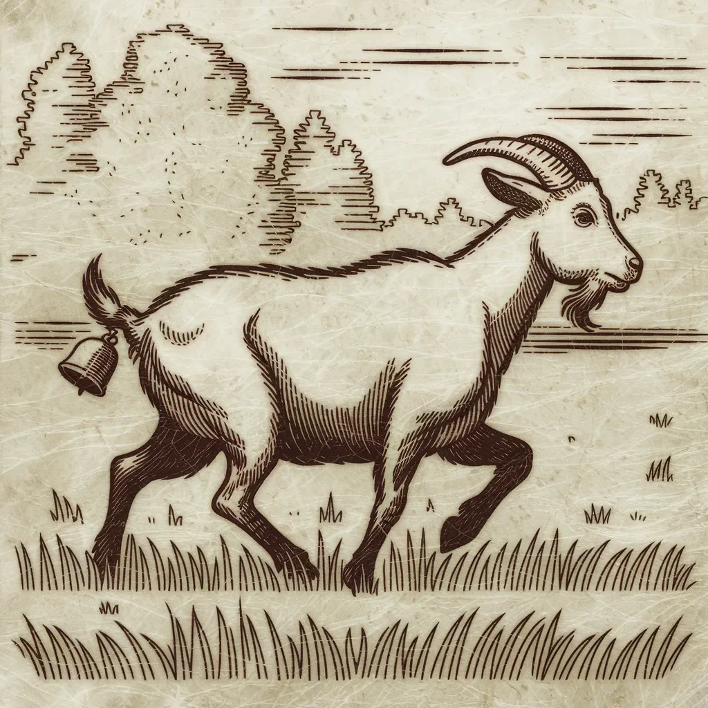

거트루드 염소는 자전거를 본 적이 없었다. 그래서 어느 무더운 오후에 늙은 젠킨스 농부가 녹슨 자전거를 헛간에 기대어 놓았을 때, 그녀는 그저 참을 수 없이 살펴보고 싶었다.
[Gertrude the goat had never seen a bicycle before. So when old Farmer Jenkins propped his rusty two-wheeler against the barn one sweltering afternoon, she simply couldn’t resist investigating.]
노란 눈에 장난기 어린 빛을 띠며, 거트루드는 그 이상한 물건으로 슬그머니 다가갔다. 그녀는 고무 타이어 냄새를 맡았고, 수염이 흥미롭게 떨렸다. 금속 프레임이 햇빛에 반짝이며 그녀를 더 가까이 부르는 것 같았다.
[With a mischievous glint in her yellow eyes, Gertrude sauntered over to the strange contraption. She sniffed at the rubber tires, her whiskers twitching with interest. The metal frame gleamed in the sunlight, beckoning her closer.]
거트루드의 호기심이 그녀를 압도했다. 그녀는 목을 뻗어 가죽 안장을 물어뜯으려 했다. 하지만 앞으로 몸을 기울이자, 그녀의 발굽이 앞바퀴 살에 걸리고 말았다.
[Gertrude’s curiosity got the better of her. She stretched her neck, aiming to nibble on the leather seat. But as she leaned forward, her hoof caught in the spokes of the front wheel]
깜짝 놀란 거트루드는 뒤로 홱 물러섰다. 자전거가 흔들리더니 요란한 소리를 내며 쓰러졌다. 그 소동에 닭들은 사방으로 흩어지고 소들은 놀라 음매 하고 울었다.
[Startled, Gertrude jerked backward. The bicycle teetered, then toppled over with a resounding crash. The commotion sent chickens scattering and set the cows mooing in alarm.]
젠킨스 농부가 달려왔다. 그의 주름진 얼굴에는 걱정과 짜증이 뒤섞여 있었다. “거트루드야!” 그가 고함쳤다. “도대체 무슨 짓을 하는 거니?”
[Farmer Jenkins came running, his weathered face a mix of concern and exasperation. “Gertrude!” he bellowed, “What in tarnation are you up to now?”]
하지만 자전거 프레임에 얽힌 거트루드는 겸연쩍은 “매애” 소리만 낼 수 있었다.
[But Gertrude, entangled in the bicycle’s frame, could only offer a sheepish “Baaaa” in response.]
얼굴이 익은 토마토처럼 붉어진 젠킨스 농부는 염소와 자전거가 뒤엉킨 쪽으로 성큼성큼 걸어갔다. 그는 “호기심 많은 짐승들"과 "골치 아픈 것들"이라는 말을 중얼거렸다.
[Farmer Jenkins, his face as red as a ripe tomato, stomped over to the tangled mess of goat and bicycle. He muttered under his breath, something about "curious critters” and “more trouble than they’re worth.”]
그가 다가오자 거트루드는 가엾게 울음소리를 냈다. 다리는 어정쩡하게 벌어져 있고 수염은 자전거 체인에 걸려 있었다. 늙은 농부는 처음의 짜증에도 불구하고 그 광경을 보고 웃음을 참을 수 없었다.
[As he approached, Gertrude bleated pitifully, her legs akimbo and her beard caught in the bike chain. The old farmer couldn’t help but chuckle at the sight, despite his initial frustration]
젠킨스 농부는 고개를 저으며 말했다. “거트루드야, 이번엔 정말 큰일을 저질렀구나.”
[Well, Gertrude,“ he said, shaking his head, "you’ve really done it this time, haven’t you?”]
그는 신음 소리를 내며 힘껏 자전거를 들어 거트루드에게서 떼어냈다. 염소는 재빨리 일어나 먼지와 함께 부끄러움도 털어내려는 듯 몸을 세차게 흔들었다.
[With a grunt and a heave, Farmer Jenkins lifted the bicycle off Gertrude. The goat scrambled to her feet, shaking herself vigorously as if trying to shed the embarrassment along with the dust.]
하지만 거트루드의 시련은 아직 끝나지 않았다. 한 걸음 내딛자 이상한 딸랑거리는 소리가 들렸다. 뒤를 돌아보니 자전거 벨이 꼬리털에 단단히 엉켜 매달려 있었다.
[But Gertrude’s ordeal wasn’t over yet. As she took a step, a peculiar jingling sound followed. She looked back to see the bicycle’s bell dangling from her tail, stubbornly tangled in her fur.]
공포가 거트루드를 사로잡았다. 이 이상하고 시끄러운 물건이 그녀를 쫓아오고 있었다! 그녀는 화살처럼 달려나갔고, 벨은 그녀의 뒤를 쫓아 경쾌하게 딸랑거리며 농장을 지그재그로 가로질렀다.
[Panic seized Gertrude. This strange, noisy thing was chasing her! She took off like a shot, zigzagging across the farmyard with the bell tinkling merrily behind her.]
닭들은 깍깍거리며 흩어졌고, 돼지들은 놀라서 꽥꽥거렸으며, 늙은 농장 개는 혼란스러운 흥분 속에 짖어댔다. 젠킨스 농부는 입을 딱 벌린 채 자전거 벨을 꼬리에 단 겁에 질린 염소가 이끄는 소란스러운 행렬을 바라보았다.
[Chickens squawked and scattered, pigs squealed in surprise, and the old farm dog barked in confused excitement. Farmer Jenkins stood slack-jawed, watching the cacophonous parade led by a terrified goat with a bicycle bell for a tail.]
거트루드가 헛간 모퉁이를 돌자 막 빨래를 널고 있던 젠킨스 부인과 마주쳤다. 둘의 눈이 잠깐 우스꽝스럽게 마주쳤고, 거트루드는 그녀를 지나 달려갔다. 젠킨스 부인은 팽이처럼 빙글빙글 돌았고 시트들은 마치 거대한 눈송이처럼 사방으로 날아갔다.
[As Gertrude rounded the corner of the barn, she came face-to-face with Mrs. Jenkins, who was carrying a basket of freshly laundered sheets. Their eyes met for a brief, comical moment before Gertrude barreled past, leaving Mrs. Jenkins spinning like a top and sheets flying everywhere like oversized snowflakes]
마지막으로 젠킨스 농부가 본 것은 옥수수밭으로 사라지는 거트루드의 모습이었고, 경쾌한 벨소리가 점점 멀어져 갔다.
[The last thing Farmer Jenkins saw was Gertrude disappearing into the cornfield, the bell’s cheerful jingle fading into the distance.]
그는 한숨을 쉬며 이제는 찌그러진 자전거를 집어 들고 중얼거렸다. “오늘 긴 하루가 될 것 같군.”
[He sighed, picked up his now-dented bicycle, and muttered, “I reckon this is gonna be a long day.”]
해가 농장 너머로 지고 있었고, 하늘은 주황색과 분홍색 빛으로 물들어 있었다. 그때 젠킨스 농부는 농장 가장자리에서 희미한 딸랑거리는 소리를 들었다. 그는 눈을 가늘게 뜨고 황혼 속으로 바라보았고, 그에게 비틀거리며 다가오는 초라한 모습을 간신히 알아볼 수 있었다.
[The sun was setting over the farm, painting the sky in hues of orange and pink, when Farmer Jenkins heard a faint tinkling sound coming from the edge of the property. He squinted into the twilight, barely making out a bedraggled shape stumbling towards him.]
그 형체가 가까워지자, 그는 그것이 거트루드라는 것을 알아챘다. 마치 옥수수밭과 전쟁을 치르고 패배한 것 같은 모습이었다. 옥수수 껍질 조각들이 그녀의 털에 붙어 있었고, 왼쪽 뿔에는 특히 고집스러운 옥수수 줄기가 달려 있었으며, 자전거 벨은 여전히 꼬리에 매달려 있었지만 이제는 진흙으로 막혀 거의 소리가 나지 않았다.
[As the figure drew closer, he realized it was Gertrude, looking like she’d been through a war with the cornfield – and lost. Bits of corn husk clung to her fur, her left horn was adorned with a particularly stubborn cornstalk, and the bicycle bell still dangled from her tail, now barely making a sound due to being clogged with mud.]
“이런, 이런,” 젠킨스 농부가 웃으며 말했다. “고양이가 물어온 걸 봐 - 아니, 옥수수밭이 뱉어낸 걸 봐야겠군.”
[“Well, I’ll be,” Farmer Jenkins chuckled, “look what the cat dragged in – or should I say, what the corn spat out.”]
계획에 없던 모험으로 지친 거트루드는 농부의 발 앞에서 극적으로 쓰러져 가련한 “매애” 소리를 냈다. 그녀의 눈빛은 “다시는 저 두 바퀴 달린 괴물들을 건드리지 않겠어요"라고 말하는 것 같았다.
[Gertrude, exhausted from her unplanned adventure, collapsed dramatically at the farmer’s feet with a pitiful "Baaaa.” Her eyes seemed to say, “Never again will I mess with those two-wheeled monstrosities.”]
젠킨스 부인은 현관에서 걱정스럽게 기다리다가 물 양동이와 수건을 들고 서둘러 다가왔다. “오, 불쌍한 것,” 그녀가 달래듯 말하며 가장 심한 진흙을 닦아내기 시작했다.
[Mrs. Jenkins, who had been anxiously waiting on the porch, hurried over with a bucket of water and some towels. “Oh, you poor thing,” she cooed, beginning to clean off the worst of the muck.]
그들이 거트루드를 돌보는 동안 젠킨스 농부는 조심스럽게 그녀의 꼬리에서 벨을 풀었다. 그는 그것을 들어 올려 생각에 잠겨 살펴보았다. “마사, 이걸 그녀에게 달아두는 게 좋겠어,” 그가 아내에게 말했다. “다음에 호기심이 그녀를 이기면 우리가 좀 덜 고생할 수 있을 거야.”
[As they tended to Gertrude, Farmer Jenkins gently untangled the bell from her tail. He held it up, studying it thoughtfully. “You know, Martha,” he said to his wife, “I reckon we ought to keep this on her. Might save us some trouble next time curiosity gets the better of her.”]
젠킨스 부인은 현명하게 고개를 끄덕였다. “그리고 그 애가 또 어떤 말썽을 피울지 모르니까 우리가 미리 준비할 수 있겠네요.”
[Mrs. Jenkins nodded sagely, “And it’ll give us a head start when she inevitably finds some new mischief to get into.”]
거트루드는 너무 지쳐서 항의할 수 없었고, 그저 부드럽게 체념의 울음소리만 냈다. 농부가 그녀의 목에 벨을 달자, 그녀는 앞으로 호기심을 충족시킬 때 더 조심해야겠다고 마음먹었다.
[Gertrude, too tired to protest, simply let out a soft bleat of resignation. As the farmer fastened the bell to her collar, she vowed to herself that she’d be more careful about satisfying her curiosity in the future.]
하지만 그 생각이 스치는 순간에도, 그녀의 눈은 울타리 기둥 위에 놓인 젠킨스 농부의 새 밀짚모자로 향했고, 그녀의 노란 눈에 익숙한 관심의 빛이 반짝였다.
[But even as the thought crossed her mind, her eyes wandered to Farmer Jenkins’ new straw hat sitting on the fence post, and a familiar glint of interest sparked in her yellow eyes.]
결국, 내일은 또 다른 날이고, 농장에서 어떤 흥미로운 새로운 것들이 살펴봐질지 누가 알겠는가?
[After all, tomorrow was another day, and who knew what exciting new things there would be to investigate on the farm.]